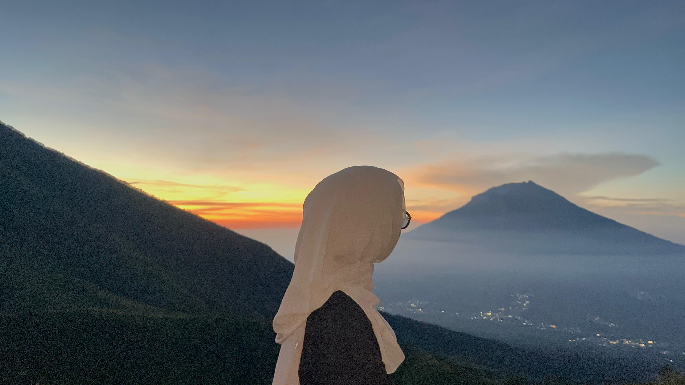
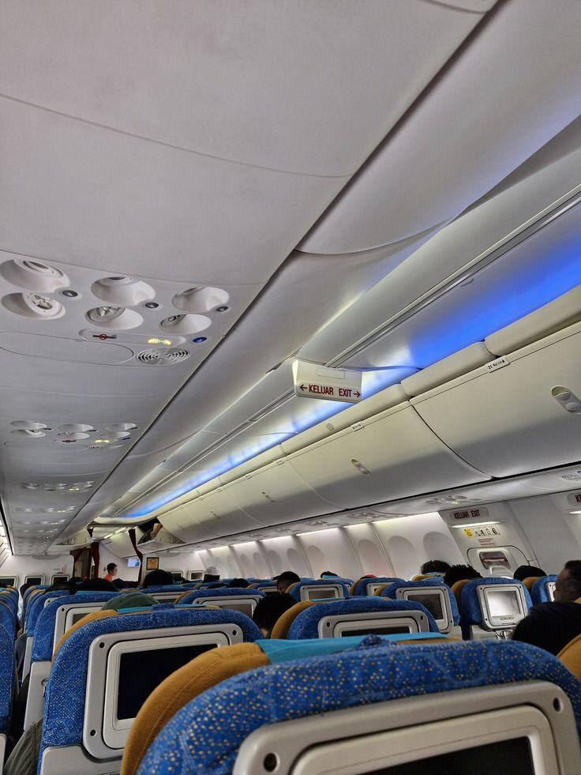

Hiking adalah salah satu cara favorit saya untuk menikmati alam dan merasakan ketenangan di tengah alam.
About Me
Halo, saya Apriliza Nurvita Putri Rahayu, mahasiswa Teknik Informatika semester 4 di Universitas Wahid Hasyim Semarang. Saya tertarik pada bidang desain dan pengembangan web, serta aktif mengembangkan kemampuan melalui berbagai proyek. Selain akademik, saya juga memiliki hobi traveling dan fotografi yang membantu saya menjaga kreativitas. Terima kasih sudah mengunjungi website saya.
Hobbies
-
Hiking
-
Traveling
Saya sangat menyukai traveling karena dapat menjelajahi berbagai tempat baru dan merasakan budaya yang berbeda.
-
Photography
Fotografi adalah hobi yang melengkapi perjalanan saya dan membantu saya berbagi cerita melalui gambar.
Skills
-
Figma
Merancang UI/UX dan prototipe interaktif dengan tampilan profesional dan responsif.
-
WordPress
Membuat dan mengelola website dengan mudah menggunakan tema dan plugin sesuai kebutuhan.